Organisation de la Société
Chez les Bassa, la vie sociale ne repose pas seulement sur l’individu, mais sur un ensemble de liens sacrés et interconnectés : la famille élargie, le lignage, le clan et la communauté. L’entraide, la solidarité et la transmission des valeurs y tiennent une place centrale, guidées par la mémoire collective.
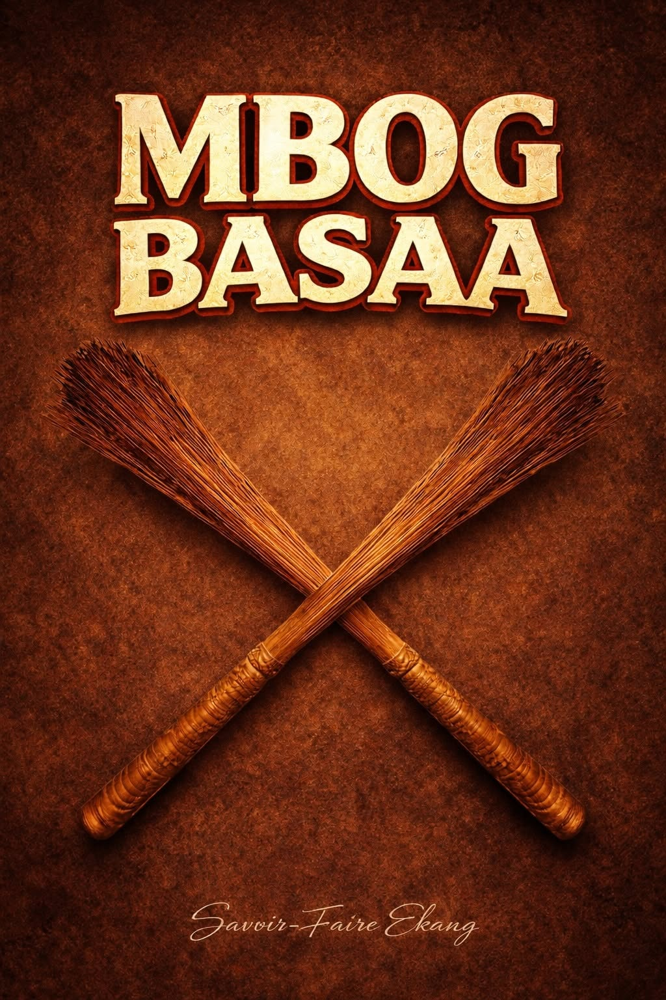
Le Mbog
L'Ordre Universel & Social
Le Mbog désigne à la fois l'univers, l'ordre social, le savoir et l'organisation communautaire. C'est la dimension spirituelle et philosophique qui régit la compréhension du monde. L'ordre social et l'ordre spirituel y sont étroitement liés pour assurer la protection du groupe.
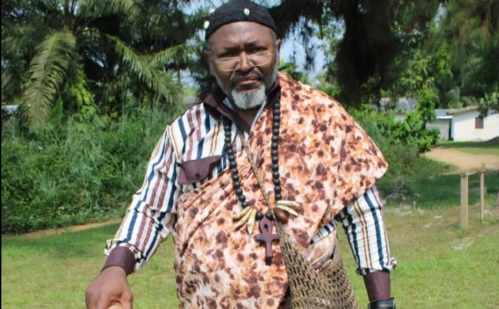
Le Mbombock
L'Autorité Traditionnelle
Figure centrale de la société, le Mbombog est le chef spirituel, moral et temporel. Gardien de la mémoire, de la parole et de l'ordre social, il intervient dans les rites et la médiation. Choisi pour son intégrité et sa sagesse, il doit parfaitement connaître les généalogies.
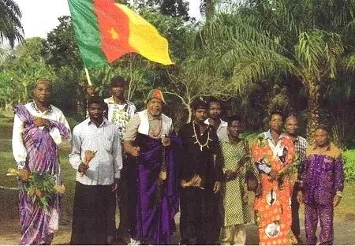
Les Anciens
Mémoire & Médiation
Les anciens occupent une position très respectée dans la communauté. Leur autorité découle directement de leur expérience et de leur capacité à transmettre les normes sociales. Ils sont systématiquement consultés pour les affaires graves, les conflits majeurs et les alliances.
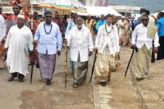
Clans & Groupes
Identité & Appartenance
La structure se déploie en grands ensembles historiques liés aux migrations et aux territoires, notamment les Babimbi, Likol et Bikok. Cette organisation clanique permet de reconnaître les appartenances, d'asseoir les solidarités et de situer les relations entre familles.
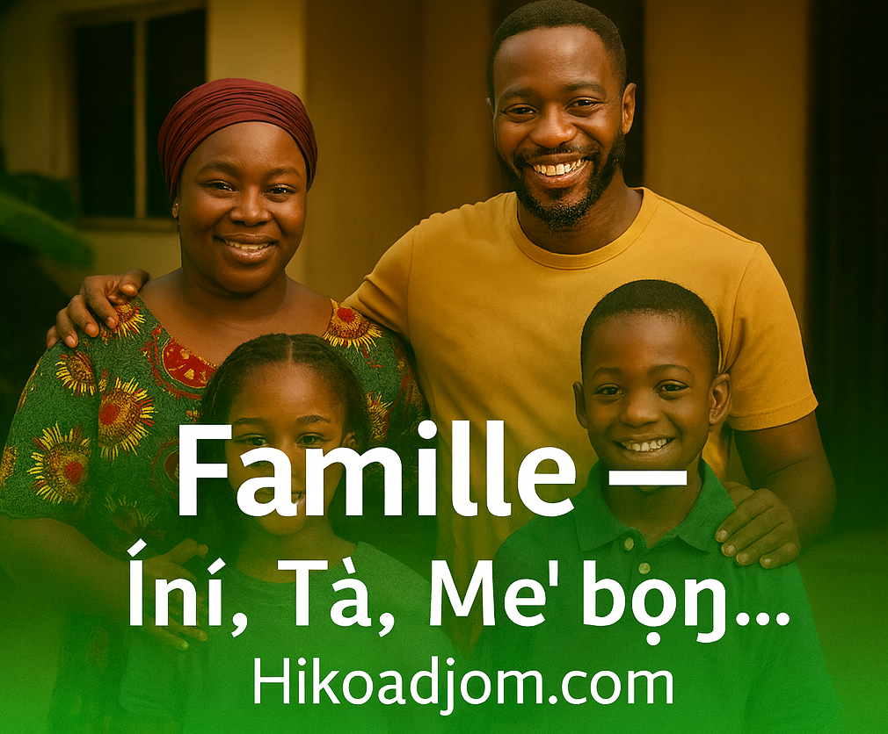
Famille & Solidarité
Économie Sociale & Entraide
La famille élargie est l'unité sociale de base qui gère l'éducation et le respect des règles. La société valorise profondément le travail collectif et le soutien mutuel (agriculture, échanges, fêtes). L'union, la prudence et le respect mutuel y sont érigés en vertus essentielles.
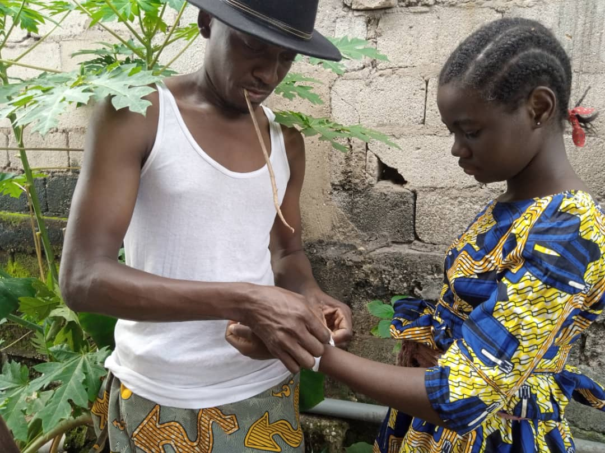
L'Initiation
Transmission des Valeurs
L'intégration pleine et entière à la communauté adulte exige une initiation. Ce passage transmet le savoir, la mémoire des ancêtres, la maîtrise des traditions et les codes de conduite. Elle marque l'accès à la responsabilité sociale et l'importance accordée à la parole donnée.
Symboles & Éléments Traditionnels
Découvrez les attributs, tenues et objets sacrés qui marquent le rang, l'autorité et le prestige dans l'aire culturelle Bassa.
Tenues d'Apparat
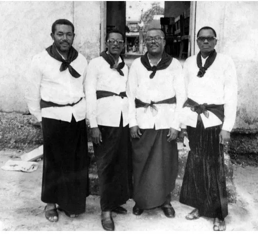
Le Sanja
Le pagne noir masculin de référence, fièrement noué et arboré lors des cérémonies majeures et des grandes occasions communautaires.
La Chemise Blanche
Traditionnellement associée au Sanja, elle est de mise pour souligner l'éclat, la dignité et la propreté rituelle de celui qui la porte.
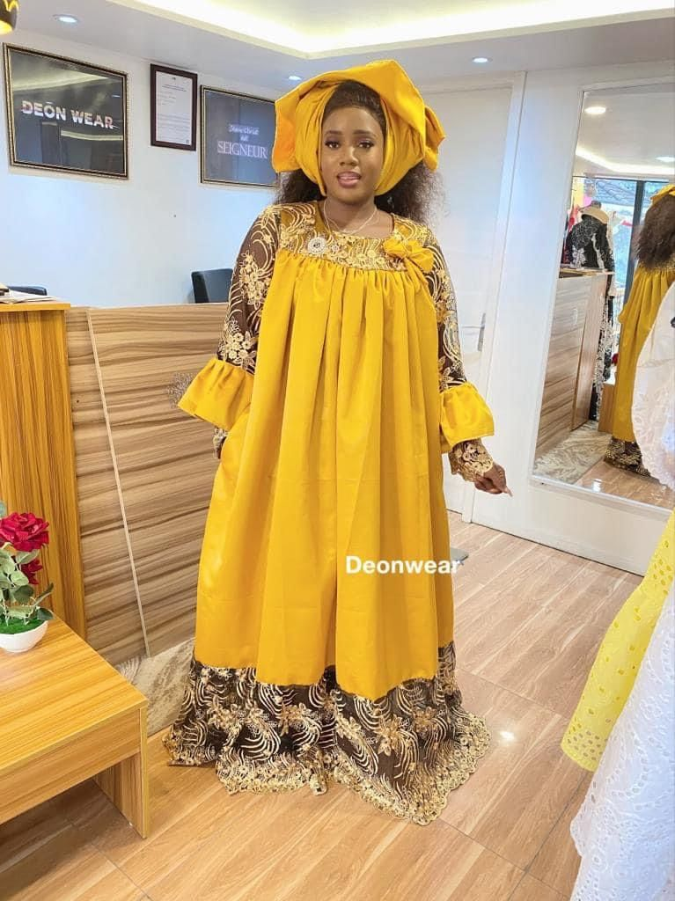
kaba et Le Wangisi
Ce foulard traditionnel se porte élégamment noué autour du cou ou parfois ajusté à la taille, parachevant l'esthétique et l'élégance.
La Chéchia / Mboto
Un couvre-chef de prestige richement orné de plumes et de cauris, symbolisant la haute distinction et la respectabilité au sein du groupe.
Objets de Pouvoir & Prestige
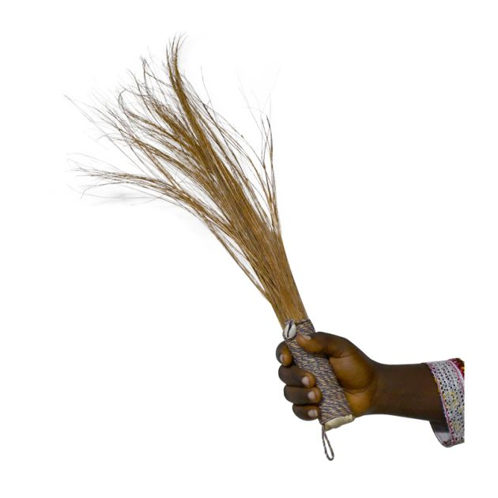
Le Chasse-mouche
Attribut noble strictement réservé à la chefferie. Il incarne l'autorité suprême, la diplomatie et la force de la parole donnée.
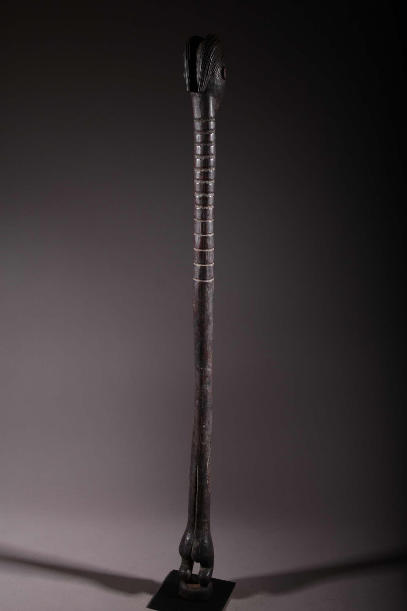
Le Sceptre
Bâton rituel et signe incontesté de commandement, il est brandi pour appeler à la préservation de la paix et à la justice.
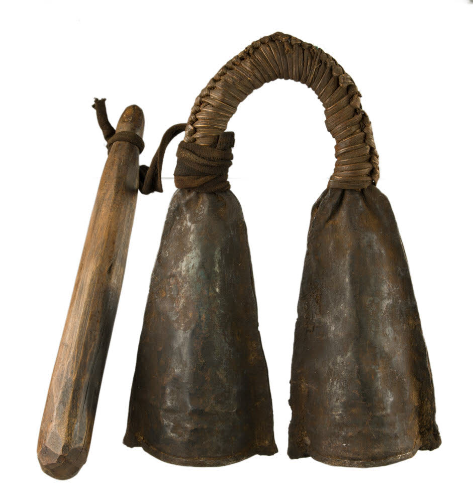
La Cloche
Instrument sonore sacré utilisé par les émissaires pour annoncer les décrets et transmettre les messages cruciaux à la population.
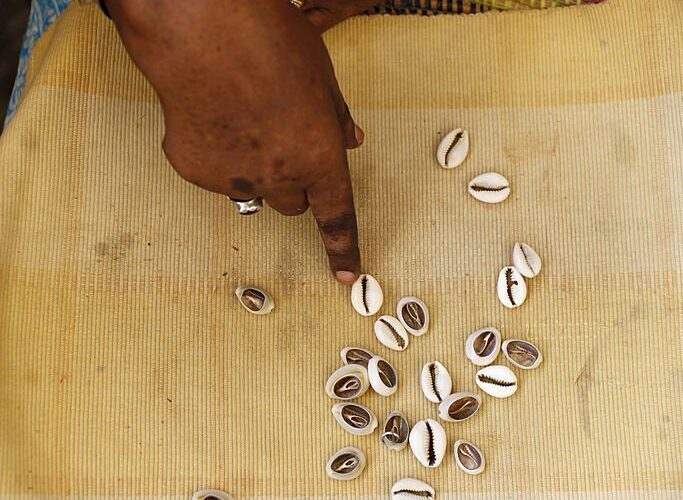
Les Cauris
Coquillages précieux incrustés sur les parures. Ils renvoient à la richesse spirituelle, au prestige historique et à la protection.
Un Rite Traditionnel : Le Likile
"Le mariage n’est pas une affaire individuelle : il unit deux lignées sous le regard des vivants et des ancêtres."
Le mariage traditionnel bassa, appelé Likile, est bien plus qu’une simple union entre deux personnes. Il s’agit d’un rite familial, social et symbolique profond qui engage deux lignées, mobilise l’autorité des anciens et place l’alliance sous le sceau de la tradition sacrée. Il sert de cadre de régulation sociale, fixant les engagements pour donner une valeur sacrée à l’union.
La Demande
La famille du futur marié ne se présente pas de manière directe. Elle adopte un langage hautement symbolique, codé et respectueux, montrant que l’union commence dans la retenue et la diplomatie. Cette phase cruciale met en avant l’importance de la parole maîtrisée dans la culture bassa.
Les Fiançailles
Cette étape officialise publiquement l’ouverture du dialogue entre les deux familles. Ce n'est pas une promesse privée, mais un acte observé et validé par le groupe. C’est le moment où les relations se précisent, où les attentes mutuelles s’expriment et où le cadre social se met durablement en place.
La Dot Matérielle
Le fiancé apporte les biens convenus à la belle-famille : animaux, sel, huile, outils et objets utiles au foyer. Loin d'être un simple échange marchand, chaque objet possède une valeur symbolique visant à réunir les éléments nécessaires pour construire une nouvelle vie commune et prouver la responsabilité du marié.
La Bénédiction & l'Apaisement
Le couple est placé au centre de la famille tandis qu’un aîné invoque les ancêtres, garants de l’harmonie du foyer. Cette phase s’accompagne d’un moment de clarification essentiel : les membres de la famille expriment l’absence de rancune et pardonnent les différends afin que l’union commence dans un climat totalement apaisé.
Le Festin & la Transition
Le repas collectif scelle la joie de l’union et matérialise publiquement la nouvelle alliance au sein de la communauté. À l’issue de ce festin, la jeune femme change officiellement de statut et de responsabilité, remettant sa trajectoire entre les mains de sa nouvelle famille conjugale.
Figures Marquantes & Grands Destins
Cliquez sur le bouton + de chaque portrait pour découvrir l'histoire de ces figures qui ont marqué le Cameroun et le monde.
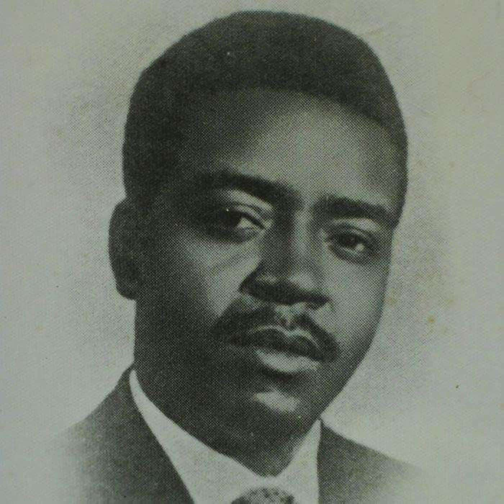
Ruben Um Nyobè
Le « Mpodol » (porte-parole)
Figure majeure de l’histoire camerounaise, Ruben Um Nyobè est présenté comme un leader anticolonial né dans l’aire bassa. Le terme « Mpodol » est un mot bassa qui signifie porte-parole, et il est fréquemment associé à son rôle de chef de la lutte politique pour l’indépendance du Cameroun.

Samuel Eto’o Fils
Légende mondiale du football
Samuel Eto’o est l’un des footballeurs africains les plus célèbres au monde. Originaire de l’aire bassa du Cameroun, il a marqué le football international par sa carrière exceptionnelle, son palmarès et son influence durable dans le sport africain.

Blick Bassy
Auteur-compositeur-interprète
Blick Bassy est un chanteur et compositeur bassa du Cameroun. Il est connu internationalement pour chanter dans sa langue maternelle, le bassa, et pour faire dialoguer musique, mémoire et identité culturelle dans ses œuvres.

Henri Hogbe Nlend
Mathématicien et universitaire
Henri Hogbe Nlend est une grande figure intellectuelle camerounaise souvent citée parmi les personnalités bassa. Son parcours scientifique et universitaire illustre la présence du peuple bassa dans les domaines du savoir, de la recherche et de l’excellence académique.

Cabral Libii
Figure politique camerounaise
Cabral Libii est une personnalité politique camerounaise moderne, régulièrement citée parmi les figures bassa connues. Son nom est associé à une nouvelle génération d’acteurs publics visibles dans le débat national.

Augustin Frédéric Kodock
Homme politique
Augustin Frédéric Kodock fait partie des personnalités bassa citées dans les sources consultées. Il est associé à la vie politique camerounaise et à la représentation des Bassa dans les sphères institutionnelles.

Jean Bikoko Aladin
Référence de l’Assiko
Jean Bikoko Aladin est l’une des figures musicales associées à l’Assiko et à la valorisation de la musique bassa. Son nom revient souvent lorsqu’on évoque les grands interprètes de la tradition musicale du Cameroun.

C. Bakang Mbock
Personnalité bassa citée dans les sources
C. Bakang Mbock apparaît dans plusieurs listes de personnalités bassa consultées. Même si les informations détaillées sont limitées dans les sources accessibles ici, son nom est associé à la mémoire des figures reconnues du peuple bassa.